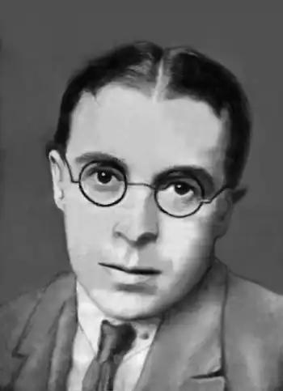

Народився 23.05.1898 р. в с. Яхники на Полтавщині в родині вчителя. Закінчив сільську та реальну школу. Вчився в Київському комерційному інституті, вчителював.
Писати почав російською мовою (збірка "Стихи", 1917). Видав збірки віршів "Світотінь" (1918) та "Луни" (1919), збірки байок "Що й до чого" (1924), "Через решето" (1924), "Байки" (1926), п'єси-агітки "В єднанні сила" і "Кооперативна мобілізація" (1924), "Божа кооперація", "Добре роби – добре й буде" (1925), комедію "Шпана" (1926), збірку оповідань "Кримінальна хроніка та інші оповідання" (1927), повість "Гробовище" (1928), віршовану казку "Мацапура" (1929).
Належав до літературно-мистецького угруповання "Музаґет" (1919), а пізніше до літературних організацій "МАРС", "Плуг", "Ланка". У 1919–1921 рр. був членом Української Комуністичної партії (боротьбистів) і жив у Білій Церкві. У 1922–1923 рр. учителював у с. Трушки на Білоцерківщині, викладав математику. Вперше В. Ярошенка заарештували 26.02.1933 р., але за "відсутністю складу злочину" через два з половиною місяці звільнили із-під варти. Вдруге він потрапив за ґрати 3.11.1936 р., а 13.07.1937 р. на закритому засіданні в Києві його засудили до розстрілу. Вирок виконали того ж дня.